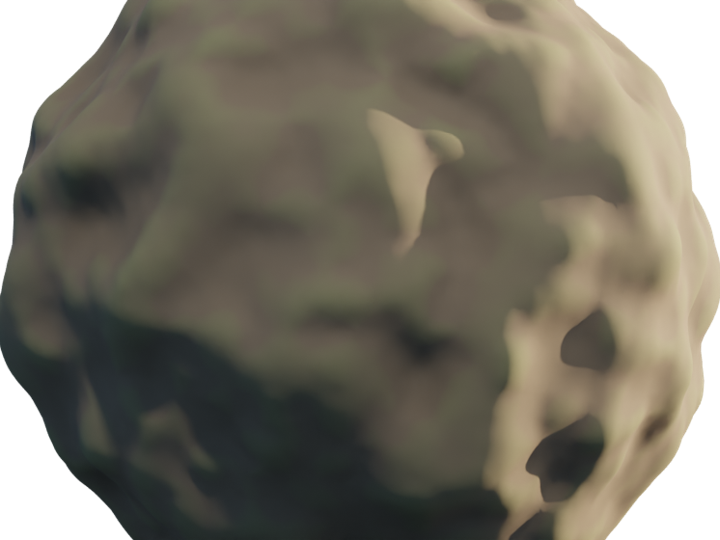

Layer Type · Reference
Reuse one layer's pattern to drive many channels independently — Substance-grade smart materials, with no baking and no round-trips.

A weathered material driven by one shared pattern.
A reference layer borrows another layer's pattern instead of making its own — but it keeps its own blend mode, opacity, mask and channel routing. The pattern is shared; the behaviour is independent.
Build a single wear mask once, then reference it to expose bare metal, raise roughness and add bump — all from one source. Edit that source later and every dependent channel follows, live.
Smart Materials
Point at any layer; share its shape without copying.
Own blend / opacity / mask per reference.
One driver feeds colour, metallic, roughness, bump.
Tweak the source — everything downstream follows.
In practice